▲ 기아 EV5(중국에서 촬영된 개체, 자료 사진). 9월 EV5·PV5 합계는 4,048대로 전년 동월보다 3,104대 늘었다 ⓒ JustAnotherCarDesigner (Wikimedia Commons, CC0)
"아이오닉5 -65%, 아이오닉6 3대"라는 숫자가 9월 판매 기사에 나란히 돌았지만, 국내 전기차 판매 격차를 읽을 때 가장 먼저 걸러야 할 숫자이기도 하다. 코리아데일리 기사는 시장을 명시하지 않았지만, 같은 기사의 현대 77,439대·기아 77,009대가 현대차·기아 미국법인 공식 발표 수치와 일치해 이 수치는 미국 판매로 확인된다. 국내 9월 전기차는 현대차 5,435대(-27.7%), 기아 7,941대(+12.6%)로 갈렸고, 기아 쪽에서는 EV5·PV5 두 차종이 4,048대(전년 동월 대비 +3,104대)를 만들어 냈다. 국내 아이오닉5는 1,262대(-44.4%), 아이오닉6는 545대(-17.0%)로 확인된다. 이 글은 이 숫자들로 '누가, 얼마나, 왜 갈렸는지'를 표로 다시 계산했다.
이 글은 차종별 격차 분석에 집중한다. 9월 5개사 전체 판매와 브랜드별 순위는 9월 국산차 판매 결과 기사에서 다뤘으므로 겹치는 수치는 그쪽으로 돌린다.
1. 먼저 걸러낼 숫자 — 아이오닉5 -65%는 어느 나라 얘기일까
"아이오닉5는 전년 대비 65% 감소, 아이오닉6는 3대에 그쳐 사실상 판매가 멈췄다"는 문장은 코리아데일리의 「[9월 신차 판매 실적] 하이브리드 수요 폭주…한국차 판매 신기록」에 있다. 이 기사는 현대차·기아·제네시스 3사 합계 16만 2,511대(+13%)를 말하는데, 이는 한국 내수(현대차 4만 9,022대, 기아 4만 5,705대)와 전혀 다른 숫자다. 현대차 7만 7,439대, 기아 7만 7,009대도 미국 시장 수치다. 기사 본문에 '미국'이라는 표현은 없지만, 현대 77,439대(+9%)와 기아 77,009대(+18%)가 Hyundai Motor America·Kia America의 9월 공식 보도자료(PR Newswire)와 정확히 일치하고, 같은 보도자료 판매표에서 아이오닉5 2,928대(전년 8,408대, -65%), 아이오닉6 3대(전년 814대)도 확인된다. 현대차 미국법인 보도자료 바로가기 현대차 국내 실적 발표문에는 이 아이오닉 문장이 없다. 코리아데일리 원문 바로가기
| 수치 | 시장 | 출처·상태 |
|---|---|---|
| 아이오닉5 -65% | 미국 | 코리아데일리(시장 명시는 없으나 현대 미국법인 보도자료와 수치 일치). 대수는 보도자료 판매표 기준 2,928대(전년 8,408대) |
| 아이오닉6 3대 | 미국 | 코리아데일리(시장 명시는 없으나 현대 미국법인 보도자료와 수치 일치). 전년 814대에서 3대로. "사실상 판매가 멈췄다"는 매체 표현 |
| 아이오닉5 1,262대(-44.4%) | 한국 내수 | 뉴스트리(조인준, 10월 1일)의 차종별 정리. 전년 2,269대는 2025년 9월 뉴스트리 보도 |
| 아이오닉6 545대(-17.0%) | 한국 내수 | 같은 보도. 전년 657대는 2025년 9월 뉴스트리 보도 |
| 현대차 전기차 5,435대(-27.7%) | 한국 내수 | 현대차 9월 실적 정리(뉴스핌·한국일보) |
| 기아 전기차 7,941대(+12.6%) | 한국 내수 | 뉴스핌 보도. 기아 보도자료 본문에서는 직접 확인하지 못했다 |
| EV5+PV5 4,048대 | 한국 내수 | 뉴스핌 보도. PV5 1,888대는 기아 발표 기반 보도에서 확인 |
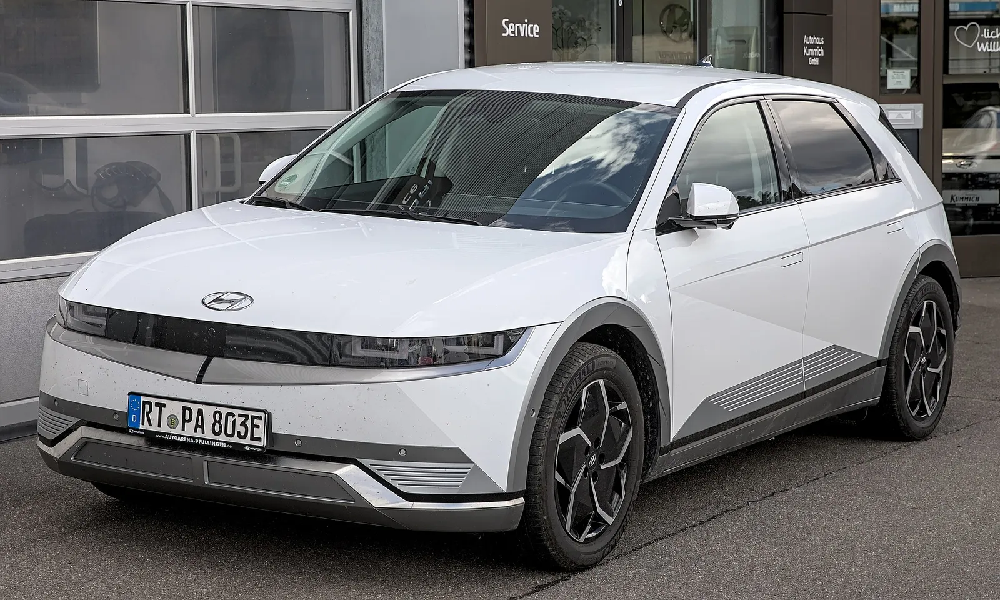
▲ 아이오닉5(독일에서 촬영한 개체). 미국 -65%와 국내 수치는 시장이 다르므로 섞어 읽으면 안 된다 ⓒ Alexander-93 (Wikimedia Commons, CC BY-SA 4.0)
같은 차종을 두 시장에 나란히 놓으면 어느 쪽이 더 가파르게 줄었는지가 보인다. 아래 표는 미국 수치(현대차 미국법인 보도자료 판매표)와 국내 수치(뉴스트리 차종별 정리)를 한 표에 둔 것이다.
| 차종 | 미국 2026년 9월(전년) | 미국 증감 | 국내 2026년 9월(전년) | 국내 증감 |
|---|---|---|---|---|
| 아이오닉5 | 2,928대(8,408대) | -65.2% | 1,262대(2,269대) | -44.4% |
| 아이오닉6 | 3대(814대) | -99.6% | 545대(657대) | -17.0% |
| 5+6 합계 | 2,931대(9,222대) | -68.2% | 1,807대(2,926대) | -38.2% |
| 미국÷국내 대수 | 아이오닉5는 미국이 국내의 약 2.3배(2,928÷1,262), 아이오닉6는 국내가 미국의 약 182배(545÷3) | |||
두 시장 모두 줄었지만 폭이 다르다. 아이오닉5는 미국 -65.2%, 국내 -44.4%이고, 아이오닉6는 미국에서 사실상 멈춘 반면 국내에서는 -17.0%에 그쳤다. 이 격차의 원인은 이 글에서 검증하지 않았다. 미국 쪽은 전기차 세액공제 종료 이후의 시장 변화를 미국 전기차 세액공제 종료 여파 기사에서 따로 다뤘다. 계산은 증감률=(올해÷전년-1)×100이다.
미국 쪽 흐름은 앞선 기사에서 7월 기준으로 따로 정리했다. 아이오닉5 미국 7월 -38% 기사와 아이오닉6 미국 판매 급감 기사가 그것이다. 두 기사는 7월 수치이므로 9월 미국 대수를 이 글에서 새로 검증한 것은 아니다.
📍 이 글의 원칙
국내 수치는 현대차·기아 9월 발표와 이를 인용한 뉴스핌·한국일보 보도에서 확인된 것만 쓴다. 전년 동월 대수는 대부분 보도에 없어 증감률로 필자가 역산했고, 반올림 때문에 수 대 정도의 오차가 있다. 원인은 매체·업계가 직접 언급한 것과 필자의 추정을 표에서 구분했다.
2. 현대차 vs 기아 — 국내 전기차 격차를 한 표로
뉴스핌 기사(이찬우 기자, 10월 2일)는 현대차 전기차 5,435대(-27.7%), 기아 전기차 7,941대(+12.6%)를 전했다. 전년 동월 대수와 비중은 이 증감률에서 역산했다. 현대차 국내 판매 4만 9,022대(-25.7%)와 기아 4만 5,705대(-6.7%)는 각사 발표다. 뉴스핌 기사 바로가기
| 구분 | 2026년 9월 | 전년 동월(역산) | 증감 | 국내 판매 내 비중(2026 → 2025) |
|---|---|---|---|---|
| 현대차 전기차 | 5,435대 | 7,521대 | -27.7% | 11.1% → 약 11.4% |
| 기아 전기차 | 7,941대 | 7,055대 | +12.6% | 17.4% → 약 14.4% |
| 두 회사 합계 | 13,376대 | 14,576대 | 약 -8.2% | 14.1% → 약 12.7% |
| 현대차 국내 전체 | 49,022대 | 약 66,001대 | -25.7% | — |
| 기아 국내 전체 | 45,705대 | 약 49,001대 | -6.7% | — |
전년 동월 전기차 대수(현대차 7,521대·기아 7,055대)와 국내 전체(66,001대·49,001대)는 2025년 9월 뉴스트리 등 보도에서 확인한 값이며, 증감률로 역산한 값(7,517대·7,052대)과 3~4대 차이다. 비중은 대수÷국내 전체 판매로 계산했다. 눈에 띄는 점은 두 가지다. 첫째, 현대차 전기차의 국내 비중은 11.4%에서 11.1%로 거의 그대로다. 전기차만 유독 무너졌다기보다 국내 판매 전체가 25.7% 빠진 흐름을 그대로 따랐다는 뜻이다. 둘째, 기아는 전체 판매가 줄었는데도 전기차 비중이 약 3%p 올랐다. 두 회사를 합치면 전기차는 약 8% 줄었지만, 국내 판매 전체가 더 크게 줄어 합계 전기차 비중은 약 12.7%에서 14.1%로 올랐다.
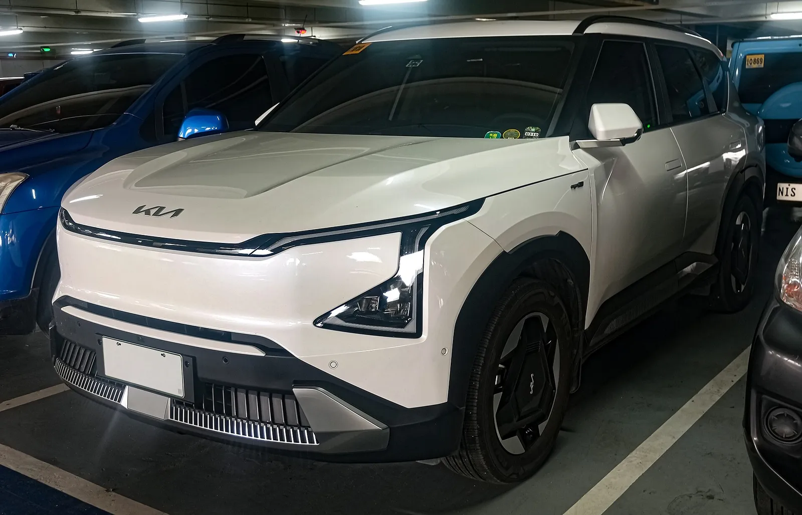
▲ 기아 EV5(주차장 촬영). 9월 EV5는 PV5와 합쳐 4,048대가 팔렸다 ⓒ Ethan Llamas (Wikimedia Commons, CC BY-SA 4.0)
3. 차종별 격차 표 — 확인된 것과 확인하지 못한 것
이번에는 차종별 대수를 확인했다. 뉴스트리가 10월 1일 현대차·기아 발표를 차종별로 정리했고, 전년 동월 대수는 2025년 9월 같은 매체 보도와 대조했다. 기아 EV9의 전년 대수만 증감률(+96.6%)로 역산했다. 뉴스트리는 현대차를 상위 5개 차종까지만 제시해 나머지는 합계에서 뺀 값이다.
| 차종 | 2026년 9월 | 2025년 9월 | 증감 | 비고 |
|---|---|---|---|---|
| 아이오닉5 | 1,262대 | 2,269대 | -44.4%(-1,007대) | 현대차 전기차 1위지만 전년의 절반 수준 |
| 스타리아(전기차 집계 항목) | 1,087대 | 확인 못 함 | — | 뉴스트리는 4월 출시 이후 처음 1,000대를 넘었다고 전함 |
| 아이오닉9 | 760대 | 1,272대 | -40.3%(-512대) | |
| 포터(전기차 집계 항목) | 575대 | 확인 못 함 | — | |
| 아이오닉6 | 545대 | 657대 | -17.0%(-112대) | |
| 그 외(코나·캐스퍼 등 구성 미확인) | 1,206대 | — | — | 5,435-(1,262+1,087+760+575+545). 필자 계산 |
| 현대차 전기차 합계 | 5,435대 | 7,521대 | -27.7%(-2,086대) | 뉴스핌 보도와 일치 |
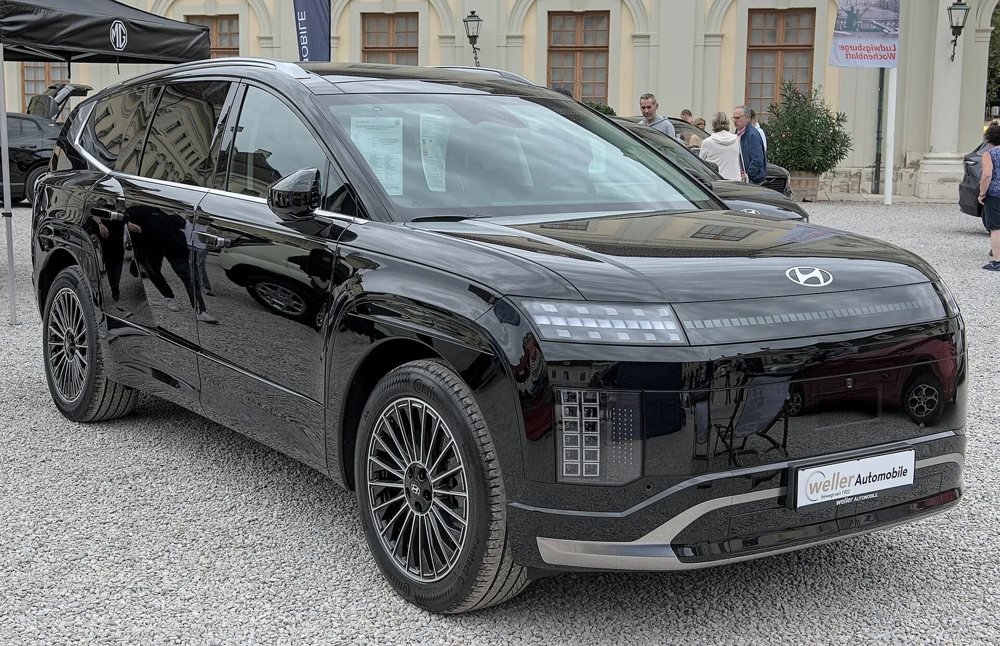
▲ 현대 아이오닉9(독일 전시 행사 촬영 개체, 연식·사양은 확정하지 않음). 9월 국내 760대로 전년 1,272대보다 40.3% 줄었다 ⓒ Alexander Migl (Wikimedia Commons, CC BY-SA 4.0)
표에서 눈에 띄는 것은 두 가지다. 첫째, 아이오닉 5·6·9 세 차종 합계는 2,567대로 전년 4,198대보다 38.9% 감소했는데, 현대차 전기차 전체는 -27.7%였다. 아이오닉을 뺀 나머지 전기차는 2,868대로 전년 3,323대 대비 약 -13.7%다(5,435-2,567, 7,521-4,198). 아이오닉이 전기차 안에서 차지하는 비중은 약 55.8%에서 47.2%로 내려갔다. 둘째, 스타리아와 포터가 합쳐 1,662대로 현대차 전기차의 약 30.6%를 차지한다. 두 차종의 전년 대수를 확인하지 못해 증감은 계산하지 않았다. 아이오닉9를 기아 EV9과 견주는 글은 아이오닉9 vs EV9 비교에서 볼 수 있다.
| 차종 | 2026년 9월 | 2025년 9월 | 증감 | 비고 |
|---|---|---|---|---|
| EV5 | 2,160대 | 272대 | +694.1% | 기아 전기차 1위 |
| PV5 | 1,888대 | 672대 | +181.0% | 기아 발표(상용차 항목) |
| EV3 | 1,627대 | 1,927대 | -15.6% | 전년에는 기아 전기차 1위 |
| 레이 EV | 848대 | 1,041대 | -18.5% | |
| EV4 | 498대 | 1,151대 | -56.7% | |
| EV6 | 410대 | 1,322대 | -69.0% | |
| EV9 | 289대 | 약 147대(역산) | +96.6% | |
| 그 외(니로 EV 등 구성 미확인) | 221대 | 약 523대(역산) | 약 -58% | 합계에서 위 7개 차종을 뺀 필자 계산 |
| 기아 전기차 합계 | 7,941대 | 7,055대 | +12.6% | 뉴스핌·뉴스트리 보도 |
PV5 1,888대는 기아 상용 판매(4,341대)의 약 43.5%다. 다만 이 대수에 승용(패신저)과 카고가 얼마씩 포함되는지는 발표에서 확인하지 못했다. KGM 무쏘 EV(107대)·토레스 EVX(18대)는 내수 감소 사유로 보조금 소진을 꼽았다(9월 판매 결과 기사 참조).
📍 제네시스 전기차는 현대차 5,435대에 들어 있을까
확인하지 못했다. 뉴스트리의 현대차 전기차 순위(아이오닉5·스타리아·아이오닉9·포터·아이오닉6)에는 제네시스 모델이 없고, 현대차 공식 발표는 제네시스를 5,742대로 별도 표기한다. 2025년 9월 뉴스트리 기사는 현대차 전기차 7,521대를 설명한 뒤 별도 문장으로 제네시스 G80 전기차 156대를 언급해, 7,521대에 포함되는지가 문장만으로는 분명하지 않다. 다만 7,521대에서 5,435대로의 감소율이 보도된 -27.7%와 정확히 맞아, 두 해는 같은 집계 기준으로 보인다.
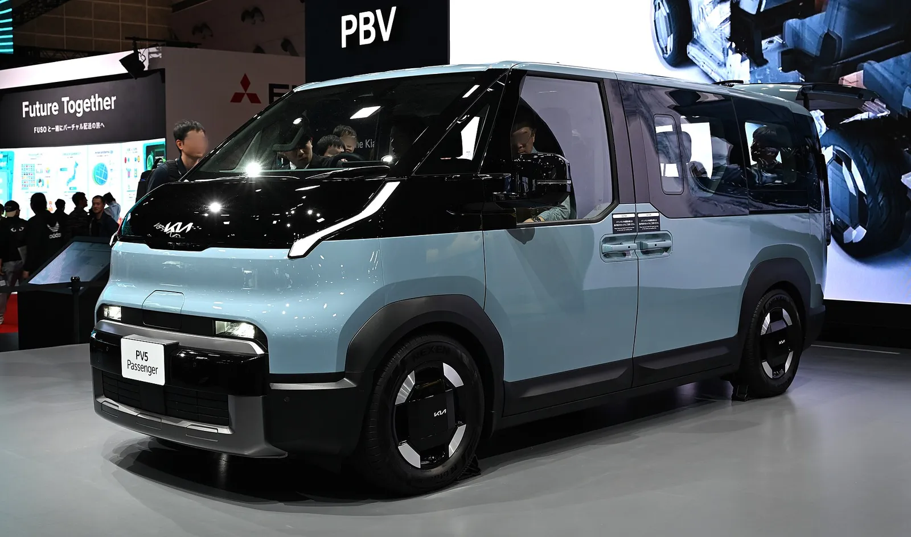
▲ 기아 PV5 패신저(2025 재팬 모빌리티쇼 전시 차량). 9월 PV5는 1,888대로 기아 상용 판매의 약 43%를 차지했다 ⓒ TTTNIS (Wikimedia Commons, CC0)
4. 기아 전기차 7,941대의 속살 — 둘이 끌고 나머지는 빠졌다
기아 전기차가 +12.6%라는 숫자는 사실상 EV5와 PV5가 만든 것이다. 두 차종의 증가분(+3,104대)이 기아 전기차 전체 증가분(+886대)보다 훨씬 크다. 즉 나머지 전기차는 합쳐서 2,218대 줄었고, 이는 뉴스핌 보도(기존 전기차 2,218대 감소)와도 같다.
| 항목 | 9월 대수 | 전년 동월 | 증감 대수 |
|---|---|---|---|
| EV5+PV5 | 4,048대 | 944대 | +3,104대 |
| 그 외 전기차 | 3,893대 | 6,111대 | -2,218대 |
| 기아 전기차 합계 | 7,941대 | 7,055대 | +886대 |
그 외 전기차 -2,218대는 어디서 나왔을까. 차종별 전년 대비 증감 대수를 큰 순서로 늘어놓았다.
| 차종 | 9월 대수 | 전년 동월 | 증감 대수 |
|---|---|---|---|
| EV6 | 410대 | 1,322대 | -912대 |
| EV4 | 498대 | 1,151대 | -653대 |
| EV3 | 1,627대 | 1,927대 | -300대 |
| 레이 EV | 848대 | 1,041대 | -193대 |
| 그 외(니로 EV 등) | 221대 | 약 523대 | 약 -302대 |
| EV9 | 289대 | 약 147대 | 약 +142대 |
| 합계 | 3,893대 | 6,111대 | -2,218대 |
EV6와 EV4 두 차종의 감소분이 1,565대로 전체 감소 2,218대의 약 70.6%다(1,565÷2,218). EV3는 대수로는 -300대지만 감소율은 -15.6%로 비교적 작다. 이 표의 "그 외 전기차"에는 증가 차종인 EV9도 들어 있다(-912-653-300-193-302+142). 왜 EV6·EV4가 이만큼 줄었는지는 보도에서 확인하지 못했다. 각 차종의 가격·사양은 EV4 가격·사양 기사, EV6 리뷰 총정리, 레이 EV 리뷰에서 볼 수 있다. EV3와 EV5의 판매 격차는 EV3와 EV5가 갈린 지점 기사에서 상반기 기준으로 다뤘다.
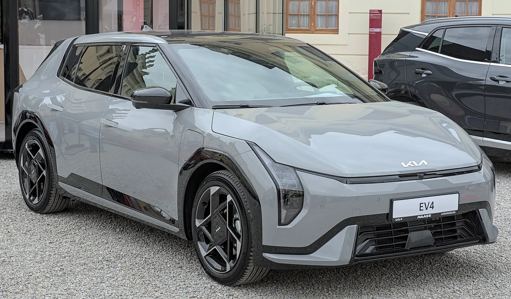
▲ 기아 EV4(독일 전시 행사 촬영 개체, 연식·사양은 확정하지 않음). 9월 국내 498대로 전년 1,151대보다 56.7% 줄었다 ⓒ Alexander Migl (Wikimedia Commons, CC BY-SA 4.0)
올해 누적으로 보면 9월 구성은 어떻게 다를까. 기아는 9월 20일 올해 국내 전기차 누적 판매가 9월 17일 기준 10만118대(전년 같은 기간 4만5,518대, 약 120% 증가)라고 밝혔다. 이 중 EV3·EV5·PV5 세 차종의 누적 대수도 함께 공개됐다. 아래 표는 이 누적 구성과 9월 단월 구성을 나란히 놓은 것이다.
| 구분 | 누적(~9/17) | 누적 내 비중 | 9월 단월 | 9월 내 비중 |
|---|---|---|---|---|
| EV3 | 25,903대 | 25.9% | 1,627대 | 20.5% |
| EV5 | 23,591대 | 23.6% | 2,160대 | 27.2% |
| PV5 | 20,030대 | 20.0% | 1,888대 | 23.8% |
| 세 차종 합계 | 69,524대 | 69.4% | 5,675대 | 71.5% |
| 그 외(EV4·EV6·EV9·레이 EV 등) | 30,594대 | 30.6% | 2,266대 | 28.5% |
| 합계 | 100,118대 | 100% | 7,941대 | 100% |
EV5와 PV5를 합친 비중은 누적 43.6%에서 9월 단월 51.0%로 올라, 9월에는 기아 전기차의 절반이 이 두 차종이었다. 반대로 EV3는 25.9%에서 20.5%로 내려갔다. 다만 누적은 9월 17일, 단월은 9월 30일 기준이라 기준일이 다르고, 9월 1~17일 판매가 양쪽에 겹쳐 있다. 기아의 1월~9월 17일 일평균은 약 385대(100,118÷260일), 9월 일평균은 약 265대(7,941÷30일)로, 9월은 올해 평균 속도의 약 69%였다. 요일·연휴·출고 시점을 보정하지 않은 단순 환산이므로 추세의 방향만 참고해야 한다. 현대차는 1~9월 전기차 누적이 전년 동기 대비 22.3% 늘었다고 뉴스핌이 전했지만(9월 단월은 -27.7%), 누적 대수와 차종별 누적은 확인하지 못했다.
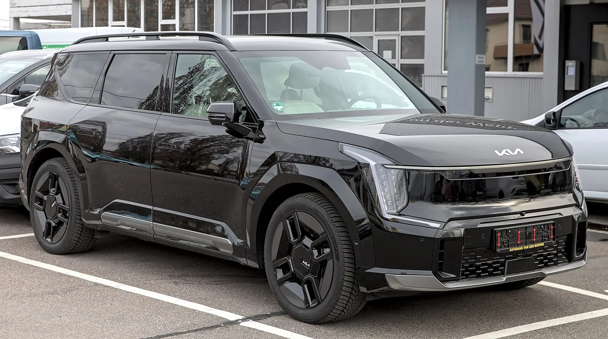
▲ 기아 EV9(주차 차량, 연식·사양은 확정하지 않음). 9월 국내 289대로 전년 동월 대비 96.6% 늘었다 ⓒ Alexander-93 (Wikimedia Commons, CC BY-SA 4.0)
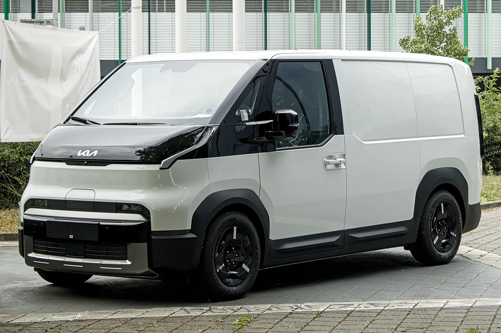
▲ 기아 PV5 카고(독일 촬영). 상용 수요 비중은 보조금 구조와 함께 봐야 한다 ⓒ Alexander Migl (Wikimedia Commons, CC BY-SA 4.0)
PV5 인기가 해외에서도 이어지는 모습은 PV5 인기와 폭스바겐 대응 기사에 정리했다. 다만 국내 9월 PV5 중 개인 승용(패신저)과 사업자 상용(카고)의 비율은 기아 발표에서 확인하지 못했다.
5. 왜 갈렸나 — 확인된 원인과 추정을 나눠서
원인 설명이 가장 많이 틀리는 구간이다. 아래 표는 보도·발표에서 직접 확인된 것과 필자의 추정을 따로 적었다.
| 후보 | 근거 | 구분 |
|---|---|---|
| 추석 연휴로 영업일수 감소·신차 대기 수요 | 현대차 관계자 "9월은 추석 연휴로 영업일수가 줄고 신차 대기 수요 등의 영향" 언급(현대차 발표) | 확인(회사 설명). 전기차에 얼마나 영향을 줬는지는 확인 못 함 |
| 보조금 소진 | 한국일보·뉴스핌: 하반기 보조금 소진이 내수에 영향. 뉴스핌 9월 초 기사는 8월 말 기준 예산 90% 소진으로 전함. 디지털투데이는 서울·경기 80~90% 소진, 일부 지방 접수 중단으로 전함 | 확인(보도). 차종별 영향 분리는 불가 |
| 소비 위축·고유가 | 한국일보: 업계가 소비 심리 위축과 장기화된 고유가를 내수 부진 요인으로 언급 | 확인(업계 설명). 전기차에 어떻게 작용했는지는 확인 못 함 |
| 신차 효과(EV5·PV5) | EV5·PV5 합계가 전년 동월 대비 약 4.3배 | 추정. 출시 시점·가격 조건이 전년 동월과 달라 같은 조건 비교가 아니다 |
| 현대차 아이오닉 시리즈 부진 | 아이오닉5·6·9 합계 2,567대로 전년 4,198대 대비 -38.9%. 아이오닉 외 전기차는 약 -13.7%(필자 계산) | 수치는 확인. 아이오닉만 더 크게 줄어든 이유(노후화·보조금·수요 이동)는 확인 못 함이라 결론을 내리지 않는다 |
| 기아 전기차 라인업 간 수요 이동(EV3→EV5 등) | EV6 -69.0%, EV4 -56.7%, 레이 EV -18.5%, EV3 -15.6% 반면 EV5 +694.1%, PV5 +181.0% | 증감은 확인. 'EV5로 수요가 옮겨갔다'는 해석은 추정(구매자 이동을 보여주는 자료 없음) |
📍 "보조금 때문에"는 반만 맞다
보조금 소진은 확인된 원인이지만, 같은 환경에서 기아 전기차는 늘었다. 보조금이 전기차 전체를 눌렀다면 EV5·PV5도 줄어야 한다. 이미 접수·출고 순서가 정해진 계약분이 9월에 출고됐을 가능성이 있으나, 이는 보도로 확인하지 못한 필자의 추정이다. 보조금 소진의 영향은 4분기 판매에서 더 또렷하게 나타날 수 있다. 같은 기아 안에서도 EV6(-69.0%)·EV4(-56.7%)는 크게 줄고 EV5(+694.1%)·PV5(+181.0%)는 늘었다는 점도, 보조금 소진만으로는 차종별 갈림을 설명하기 어렵다는 근거다.
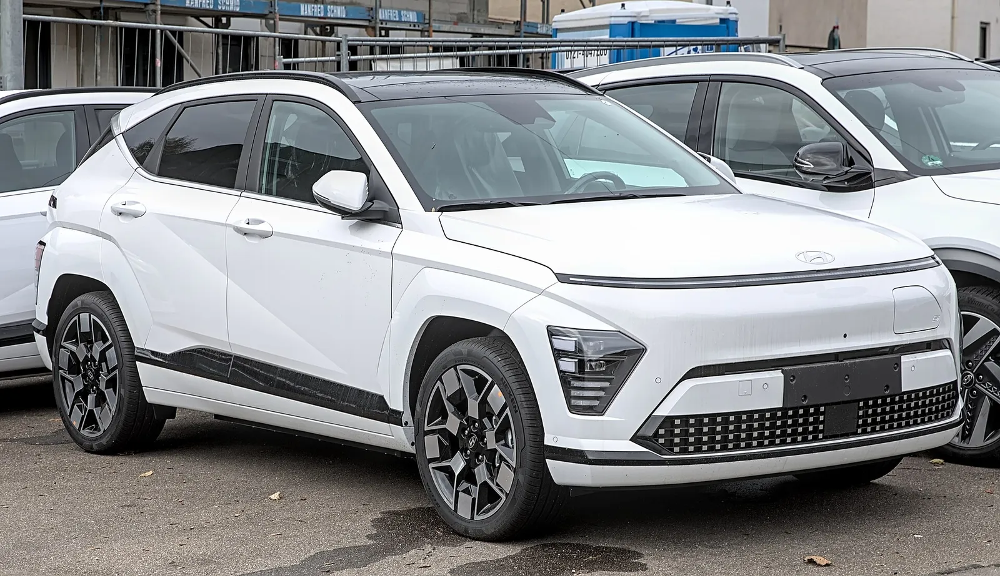
▲ 현대 코나 일렉트릭(주차 차량). 코나 일렉트릭 단독 대수는 확인하지 못했고, 현대차 전기차 5,435대 중 상위 5개 차종(4,229대) 밖 1,206대에 속한다 ⓒ Alexander-93 (Wikimedia Commons, CC BY-SA 4.0)
6. 같은 달 하이브리드는 — 현대차 -12.6%, 기아 +8.8%
뉴스핌 기사는 하이브리드도 함께 전했다. 현대차 14,761대(-12.6%), 기아 17,160대(+8.8%)다. 전기차에서 갈린 두 회사가 하이브리드에서도 같은 방향으로 갈렸다. 이것도 전년 동월 대수는 역산이다.
| 구분 | 현대차 | 기아 | 합계 |
|---|---|---|---|
| 하이브리드 9월 | 14,761대 | 17,160대 | 31,921대 |
| 하이브리드 전년 동월(역산) | 약 16,889대 | 약 15,772대 | 약 32,661대 |
| 하이브리드 증감 | -12.6% | +8.8% | 약 -2.3% |
| 하이브리드 국내 비중 | 약 30.1% | 약 37.5% | 약 33.7% |
| 전기차 국내 비중 | 11.1% | 17.4% | 약 14.1% |
| 하이브리드+전기차 합 | 20,196대(약 41.2%) | 25,101대(약 54.9%) | 45,297대(약 47.8%) |
이 표의 '하이브리드+전기차'는 두 파워트레인만 더한 값이며 수소차·플러그인 하이브리드·내연기관 등은 빠져 있다. 정부 통계의 '친환경차' 정의나 기아가 8월에 공개한 친환경차 비중(61.9%)과 직접 비교할 수 없다. 현대차 수소차는 326대(-73.7%)로 따로 전해졌다(한국일보).
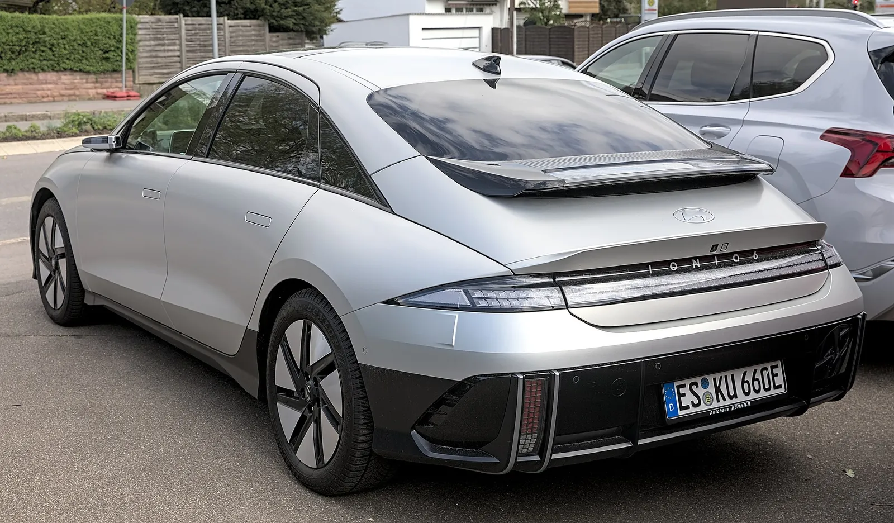
▲ 아이오닉6(독일 촬영). 코리아데일리가 미국에서 9월 3대에 그쳤다고 전한 차종이다(현대차 미국법인 보도자료와 일치) ⓒ Alexander-93 (Wikimedia Commons, CC BY-SA 4.0)
7. 4분기 — 보조금이 바닥나면 이 격차는 어떻게 될까
9월 격차가 4분기에도 유지될지는 확인된 것이 없다. 다만 정책 쪽 신호는 있다. 뉴스핌은 올해 전기차 보조금 예산이 8월 말 기준 90% 소진됐다고 전했고, 디지털투데이는 출고·등록 순서 기준 때문에 4분기 신규 구매자가 올해 예산을 받기 어려운 구조를 짚었다. 반대로 내년 보급 예산은 올해보다 늘고 보조금 100% 지급선은 낮아진다. 구매 시점에 따라 받을 금액이 달라지는 부분은 2027년 전기차 보급 예산 확대, 2027년 보조금 가격 기준 하향, 9월 잔여 예산 확인법 기사에서 따로 정리했다. EV5의 보조금 계산은 EV5 보조금 3단계 계산에서 볼 수 있다.
| 항목 | 확인된 내용 | 구분 |
|---|---|---|
| 소진 수준 | 뉴스핌(9월 7일): 올해 예산 8월 말 기준 90% 소진. 디지털투데이(10월 2일): 서울·경기 등 주요 지자체 9월 하순 기준 80~90%, 일부 지방 시·군 접수 중단 | 확인(보도). 무공해차 통합누리집의 지자체별 실시간 수치는 이 글에서 열람하지 못했다. 구매 전 직접 확인해야 한다 |
| 현대차 전기차 월별 흐름 | 1~9월 누적 +22.3%(뉴스핌), 9월 단월 -27.7% | 확인. 누적과 9월이 반대 방향이라는 사실까지만 말할 수 있다 |
| 기아 전기차 9월 속도 | 올해 일평균 대비 약 69%(위 단순 환산) | 필자 단순 환산. 월별 속도 변화는 보정하지 않았다 |
| 소진율과 월별 판매의 상관 | 지자체 소진율의 월별 시계열과 월별 전기차 판매를 함께 확보하지 못했다 | 계산하지 않음. 한 달(9월) 자료만으로 상관을 주장할 수 없다 |
지자체별 보조금 규모와 접수 방식 차이는 지자체별 전기차 보조금 비교 기사에서 볼 수 있다. 4분기 판단은 아래 후속 확인 지점으로 대신한다.
| 확인 대상 | 볼 시점 | 이유 |
|---|---|---|
| 10월 현대차·기아 판매 발표 | 11월 1일 전후 | 보조금 소진 효과가 EV5(2,160대)·PV5(1,888대)에도 번지는지, 아이오닉5(1,262대)가 반등하는지 확인. 9월 대수가 비교 기준선이다 |
| 제네시스 전기차 포함 여부 | 확인 가능 시 | 현대차 5,435대에 제네시스 전기차가 합산됐는지에 따라 아이오닉 외 전기차 -13.7% 계산이 달라질 수 있다 |
| 스타리아·포터 전기차 전년 대수 | 확인 가능 시 | 현대차 전기차의 약 30.6%를 차지하는 상용 계열의 증감이 확인돼야 아이오닉 외 흐름을 해석할 수 있다 |
| 현대차 1~9월 전기차 누적 대수 | 확인 가능 시 | 누적 +22.3%의 대수가 확인돼야 9월 -27.7%의 무게를 잴 수 있다 |
✅ 판매 기사에서 전기차 숫자를 읽을 때 체크할 것
· 시장부터 확인 — 같은 "한국차 9월 판매"라도 국내인지 미국인지에 따라 숫자가 완전히 다르다
· 합계와 신차의 분리 — 신차 두 종이 합계를 끌어올리면 나머지 차종의 감소가 가려진다
· 증감률과 대수를 같이 — 작은 기저에서 나온 +694%와 큰 기저의 -27.7%는 무게가 다르다
· 원인은 출처를 구분 — 회사가 말한 이유, 매체가 해석한 이유, 필자 추정을 섞지 않는다
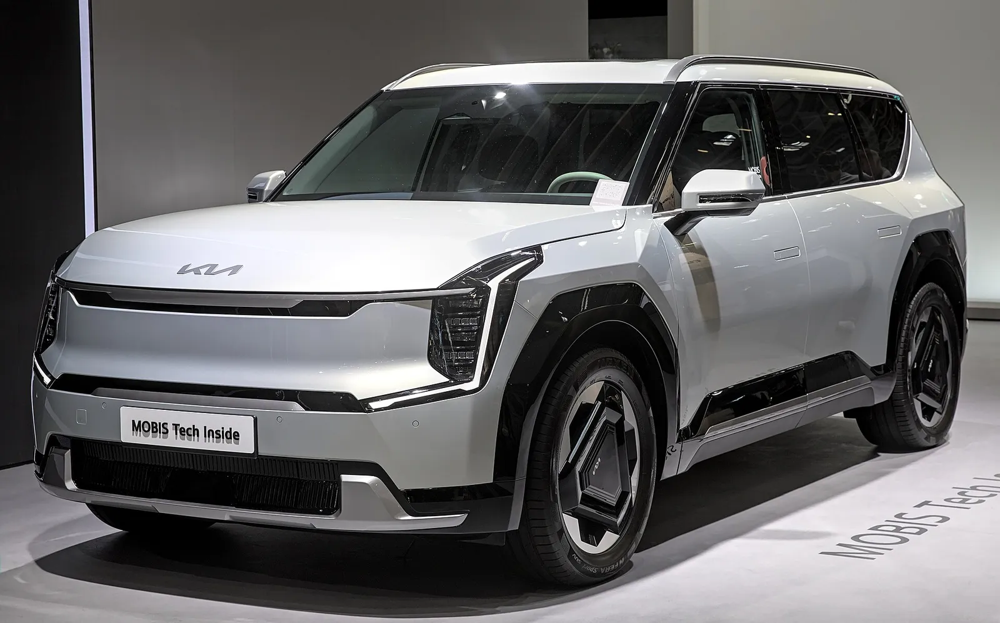
▲ 기아 EV9(2023년 독일 전시 행사 촬영 개체, 연식·사양은 확정하지 않음). 9월 국내 EV9은 289대로 기아 전기차 7,941대의 약 3.6%였다 ⓒ Alexander-93 (Wikimedia Commons, CC BY-SA 4.0)
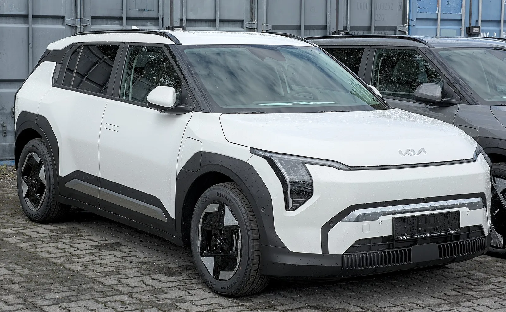
▲ 기아 EV3(독일 촬영). 9월 국내 EV3는 1,627대로 전년 1,927대보다 15.6% 줄었다 ⓒ Alexander Migl (Wikimedia Commons, CC BY-SA 4.0)
8. 독자가 궁금해할 것들
Q. 국내 아이오닉5가 -65%인가요?
A. 아니다. -65%는 코리아데일리의 미국 판매 기사에 나온 수치다. 국내 아이오닉5는 9월 1,262대로 전년 2,269대보다 44.4% 줄었다(뉴스트리 보도 대조).
Q. 제네시스 전기차도 현대차 5,435대에 들어 있나요?
A. 확인하지 못했다. 뉴스트리 순위에는 제네시스 모델이 없고, 현대차 발표는 제네시스(5,742대)를 별도 표기한다.
Q. 스타리아·포터는 왜 전기차 순위에 있나요?
A. 뉴스트리가 현대차 전기차 순위로 제시한 항목이다(스타리아 1,087대, 포터 575대). 두 차종의 전년 대수는 확인하지 못해 증감은 계산하지 않았다.
Q. 기아 전기차 +12.6%면 전기차 시장이 살아난 건가요?
A. 보도 수치상 EV5·PV5가 증가분 대부분을 만들었다. EV6(-69.0%)·EV4(-56.7%)는 크게 줄었고, 두 회사 합산 전기차는 13,376대로 전년 14,576대 대비 약 -8.2%다.
Q. 하이브리드가 전기차를 대체한 건가요?
A. 기아에서는 하이브리드가 늘었지만 현대차는 줄었다. 하이브리드 수요 이동이라는 설명만으로는 두 회사의 차이를 설명하지 못한다.
9. 요약
9월 국내 전기차는 현대차 5,435대(-27.7%), 기아 7,941대(+12.6%)로 갈렸다. 아이오닉5 -65%, 아이오닉6 3대는 미국 수치이고, 국내는 아이오닉5 1,262대(-44.4%), 아이오닉6 545대(-17.0%), 아이오닉9 760대(-40.3%)였다.
기아의 증가는 EV5·PV5 합계 4,048대(+3,104대)가 만들었고, 이 둘을 뺀 기아 전기차는 2,218대 줄어 약 -36%였다. 그중 EV6(-912대)와 EV4(-653대)가 약 71%를 차지한다. 현대차 전기차 비중은 11.4%에서 11.1%로 거의 같아, 판매 전체의 하락 흐름을 따랐다.
원인은 보조금 소진·추석 영업일·소비 위축이 확인되나, 차종별 영향 분리와 신차 효과는 추정이다. 보조금 소진율과 월별 판매의 상관은 자료 부족으로 계산하지 못했다. 제네시스 포함 여부와 현대차 누적 대수도 확인하지 못했으므로, 10월 판매 발표 전에는 이 격차가 이어진다고 단정할 수 없다.